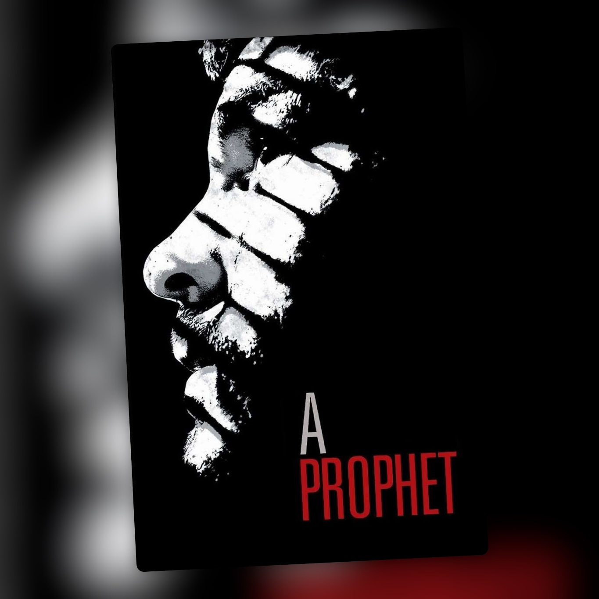

Un profeta (2009)
La cárcel como escuela de criminales

Me ha encantado Un profeta, sobre todo por cómo presenta a Malik, un joven de origen árabe que entra en prisión con 19 años, sin saber leer ni escribir y sin tener muy claro cómo moverse en ese mundo, y acaba convertido en un auténtico capo criminal. La película está dirigida y coescrita por Jacques Audiard, que ya había explorado personajes obligados a buscarse la vida en entornos difíciles en películas como De latir mi corazón se ha parado.
A lo largo de su condena vemos cómo Malik aprende a sobrevivir, a leer a los demás y a aprovechar las oportunidades que se le presentan. Aprende a leer dentro de la cárcel, con la ayuda de un preso árabe, y también aprende corso sin que los corsos lo sepan. Su inteligencia le permite ir creciendo hasta hacerse con un lugar propio.
También me ha gustado cómo presenta la realidad de las prisiones francesas, bastante alejada de la imagen que tenemos por tantas películas estadounidenses. Aquí la cárcel está dividida entre corsos y árabes, cada grupo con sus lealtades y su forma de ejercer el poder, y Malik no encaja del todo en ninguno: los corsos lo desprecian por ser árabe y los árabes lo ven como un traidor. Tiene que aprender las reglas de ese entorno y entender quién manda, de quién puede fiarse y qué necesita hacer para que dejen de verlo como alguien al que pueden utilizar. Las relaciones y las alianzas pesan tanto como la fuerza.
La cárcel de la película se ha interpretado como un reflejo de la sociedad francesa, y a Malik se le ha comparado con Tony Montana en Scarface o con Michael Corleone en El padrino.
Lo que más me interesa de su historia es que Malik no sale de prisión convertido en una persona mejor. Ocurre justo lo contrario. Entra siendo un joven vulnerable y, a medida que aprende a manejarse entre los presos y a utilizar su inteligencia, se convierte en alguien cada vez más peligroso. La película sigue ese proceso sin presentarlo como un héroe: puedes entender cómo consigue avanzar y, al mismo tiempo, ver en qué se está convirtiendo.
Ahí está una de las ideas que más me han gustado: una institución que debería servir para reinsertar a quienes han cometido delitos termina convirtiéndose, en el caso de Malik, en una escuela de criminales. La condena no lo aparta de ese mundo, sino que le da las herramientas para ascender en él.
Su ascenso me ha parecido fascinante de seguir, aunque lo que consigue es convertirse en alguien capaz de ejercer ese mismo poder sobre los demás.
Ficha técnica
- Título original: Un prophète
- Dirección: Jacques Audiard
- Guion: Jacques Audiard y Thomas Bidegain, a partir de un guion original de Abdel Raouf Dafri y Nicolas Peufaillit
- Reparto principal: Tahar Rahim, Niels Arestrup, Adel Bencherif, Reda Kateb y Hichem Yacoubi
- Año: 2009
- Duración: 149 min
- Plataforma(s) actual(es) en España: Movistar Plus+ (Ficción Total), HBO Max y Acontra Plus (suscripción)